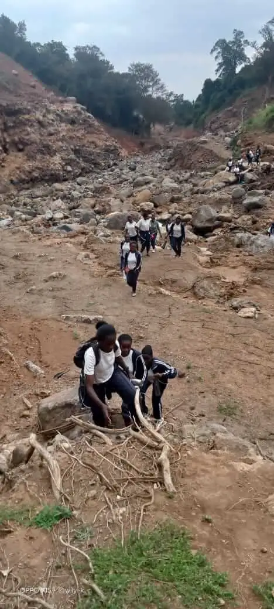

Kijabe Hills Hiking Guide: Explore Old Kijabe Township & the Great Rift Valley
Introduction
Perched along the eastern edge of the Great Rift Valley, Old Kijabe Township is one of Kenya's most historic highland settlements. Known for its railway heritage, colonial-era architecture, breathtaking escarpment views, and a network of scenic hiking trails, Kijabe offers a unique mix of culture, nature, and adventure. Whether you are a history enthusiast, nature lover, or avid hiker, this area is a destination worth exploring.

Long before Mai Mahiu became a major transport hub and before Kijabe Mission earned international recognition for its hospital and schools, Old Kijabe served as an important railway and trading township during the construction of the Uganda Railway. Its highland setting and position on the Rift Valley escarpment made it a natural stop for railway workers, missionaries, traders, and local communities.
Today, the township still shows its historic character through stone buildings, railway landmarks, and sweeping escarpment views. Combined with cool highland weather, indigenous forests, and easy access from Nairobi, Old Kijabe remains one of Kenya's most compelling hiking destinations.
 >
>
Kijabe Hills at a Glance
| 📍 Location | Old Kijabe, Nakuru County, Kenya |
| 🥾 Trail Difficulty | Easy to Moderate |
| ⏱ Hiking Time | 4–6 Hours |
| 📏 Distance | Varies by route |
| 🏔 Elevation | Approx. 2,200 m |
| 🚗 Distance from Nairobi | About 65 km |
| 🌤 Best Season | June–October & January–March |
| 👨👩👧 Suitable For | Beginners, Families, schools, private organisations & Experienced Hikers |
Looking for your next adventure? Browse our join an upcoming group hike.
The Origins of Old Kijabe Township
The story of Old Kijabe begins in the late 19th century during the construction of the Uganda Railway, often referred to as the "Lunatic Express." As railway workers pushed inland from the Kenyan coast toward Lake Victoria, strategic settlements emerged along the route. Kijabe became one of these important railway stations due to its location on the steep escarpment overlooking the Great Rift Valley.
The name "Kijabe" is believed to have originated from the Maasai language, reflecting the area's long-standing connection to indigenous communities that occupied the region before colonial settlement. Its cool climate, fertile soils, and elevated position attracted settlers, missionaries, and railway workers who contributed to the growth of the township.
During the colonial period, Old Kijabe developed into a small but important highland settlement. Railway facilities, residential homes, churches, schools, and agricultural enterprises emerged around the station, creating a vibrant community that played a significant role in the development of Kenya's central highlands.
Kijabe and the Uganda Railway
One of the most significant chapters in Kijabe's history is its connection to the Uganda Railway. The challenging terrain of the Rift Valley escarpment required remarkable engineering solutions, and Kijabe became an important operational point along the railway line.
Even today, visitors can observe sections of the historic railway corridor that helped transform East Africa's transportation network. The railway not only connected communities but also opened the region to trade, agriculture, and tourism.
For history lovers, hiking through Kijabe offers an opportunity to walk in the footsteps of railway pioneers while enjoying spectacular views of the valley below.

The Scenic Beauty of Kijabe Hills
What makes Kijabe truly exceptional is its location on the edge of the Great Rift Valley. Rising over 2,200 meters above sea level, the hills provide panoramic views stretching across forests, valleys, volcanic landscapes, and distant mountain ranges.
The area is characterized by indigenous forests, grasslands, rocky escarpments, seasonal waterfalls, and diverse wildlife. The combination of high altitude and cool temperatures creates ideal conditions for outdoor recreation throughout the year.
During clear days, hikers can enjoy sweeping views of Mount Longonot, Suswa, and large sections of the Rift Valley floor.

Planning a private outing? See our private hiking packages for families, schools and corporate teams.
Why Visit Kijabe Hills?
Kijabe Hills combines breathtaking Rift Valley views, lush forests, wildlife, historical sites, and scenic railway viewpoints. It is one of the most rewarding hiking destinations within easy reach of Nairobi.

Why Kijabe Is One of the Best Places to Hike in Kenya
1. Spectacular Escarpment Views
Few hiking destinations near Nairobi offer views comparable to those found along the Kijabe escarpment. The dramatic drop into the Great Rift Valley creates unforgettable viewpoints that attract photographers and outdoor enthusiasts from across the country.
2. Accessible from Nairobi
Located approximately one hour from Nairobi, Kijabe is ideal for day hikes and weekend adventures. Its accessibility makes it one of the most convenient hiking destinations for residents and visitors alike.
3. Trails for Every Skill Level
Kijabe offers a variety of hiking routes suitable for beginners, intermediate hikers, and experienced trekkers. Gentle forest walks, scenic ridgeline hikes, and challenging escarpment trails ensure there is something for everyone.
4. Rich Historical Landmarks
Unlike many hiking destinations, Kijabe combines natural beauty with historical significance. Old railway infrastructure, historic churches, colonial-era buildings, and mission institutions provide fascinating points of interest along hiking routes.
5. Diverse Ecosystems
Hikers can experience forests, grasslands, river valleys, and escarpment environments within a single outing. This ecological diversity contributes to excellent birdwatching opportunities and unique scenery throughout the year.
6. Cooler Temperatures
The high elevation of Kijabe provides a refreshing escape from the heat often experienced in lower-altitude destinations. Cool temperatures make hiking more comfortable, especially during sunny months.

Best Time to Visit Kijabe Hills
The best months are January–March and June–October when the weather is cool and the trails are less muddy.
Ready to Experience Kijabe Hills?
Join one of our professionally guided hikes and discover the beauty, history and breathtaking viewpoints of Kijabe Hills.
Book Your Kijabe Hills HikePopular Attractions Around Kijabe
- Kijabe Hills Escarpment Trails
- Old Kijabe Railway Station
- Kijabe Hotsprings
- Kijabe Hills Historical Sites
- Historic Uganda Railway viewpoints
- Great Rift Valley scenic overlooks
- Kijabe Forest trails
- Nearby Mount Longonot views
- Old mission and church sites
- Kijabe Hills Waterfalls and Streams
Trail Access and Guided Visits
Old Kijabe Township is best explored with a guide who knows the historic railway corridors, escarpment viewpoints, and hidden forest paths.
For safe planning, check our hiking safety tips before you go.
Contact Kijabe Adventures to plan a custom hiking route that combines local history with scenic trails and safe, expert guidance.
Best Time to Visit Kijabe
Kijabe can be visited throughout the year, but the clearest views are often experienced during the dry seasons from January to March and June to October. Following the rainy seasons, the hills become especially green and scenic, making them popular among photographers and nature lovers.
Experience Kijabe with Local Guides
Exploring Kijabe with experienced local guides allows visitors to discover hidden viewpoints, historical landmarks, indigenous flora, and lesser-known trails. Guided hikes provide deeper insight into the township's rich heritage while ensuring a safe and enjoyable outdoor experience.
Buildings that Survived the Test of Time since the Colonial-Era at Old Kijabe Township
Old Kijabe Township remains one of the few places in Kenya where visitors can still encounter physical reminders of the early colonial and railway era. Several historic stone buildings have survived the passage of time, preserving the story of a settlement that once played a significant role in transportation, trade, and missionary activities along the eastern edge of the Great Rift Valley.
Among the most notable landmarks is the historic Old Kijabe Railway Station building, located near the center of the township. Built during the era of the Uganda Railway, the station served as an important stop for trains traveling between Nairobi and western Kenya. Today, the structure remains one of the town's most recognizable historical sites and attracts visitors interested in railway history, photography, and local heritage.
Walking through Old Kijabe reveals additional stone buildings dating back to the early years of the settlement. These structures reflect the influence of railway workers, missionaries, settlers, and local communities who contributed to the development of the town during the late nineteenth and early twentieth centuries. Their architecture provides a glimpse into a period when Kijabe was among the most important settlements in the region.
For hikers exploring the escarpment, these historic buildings add a unique cultural dimension to the experience. Few destinations in Kenya offer the opportunity to combine spectacular Rift Valley views, scenic hiking trails, and well-preserved historical landmarks within a single adventure.
Exploring Kijabe with experienced local guides allows visitors to discover hidden viewpoints, historical landmarks, indigenous flora, and lesser-known trails. Guided hikes provide deeper insight into the township's rich heritage while ensuring a safe and enjoyable outdoor experience.
Wildlife and Nature in Kijabe Hills
Kijabe Hills is home to a variety of wildlife species, including birds,monkeys, antelopes, rabbits, and small mammals. Hikers may encounter colorful bird species such as sunbirds, hornbills, and kingfishers along the trails. The indigenous forests provide habitat for monkeys, bushbucks, and other small mammals.
The area's diverse ecosystems support a range of plant life, including native trees, shrubs, and wildflowers. Seasonal streams and waterfalls add to the scenic beauty while providing water sources for wildlife.
Conservation efforts in the region aim to protect these natural habitats while promoting responsible tourism. Visitors are encouraged to respect wildlife, avoid littering, and follow designated trails to minimize their impact on the environment.
Wildlife You May Encounter
- Colobus Monkeys
- Vervet Monkeys
- Bushbucks
- Hares and Rabbits
- Rock Hyrax
- Various Reptiles (Lizards, Snakes)
- Over 100 bird species
- Butterflies & Moths
The 2024 Old Kijabe and Mai Mahiu Disaster
On the night of April 29, 2024, one of the most devastating natural disasters in recent Kenyan history unfolded along the slopes below Old Kijabe Township. Following weeks of exceptionally heavy rainfall across the central highlands, a catastrophic flash flood and debris flow swept through several villages in the Mai Mahiu area, causing widespread loss of life and destruction of property.

Initial reports described the tragedy as the result of a "burst dam." However, subsequent investigations by the Water Resources Management Authority (WRMA) indicated that the disaster originated from a deeply incised gulley in the Kijabe Hills. According to the findings, water had accumulated behind blocked drainage channels and landslide debris near the historic railway corridor above Mai Mahiu. As rainfall continued, pressure built up until the natural embankment failed, releasing a powerful surge of water, mud, rocks, trees, and other debris downstream.
Local residents and experts also pointed to the role of the historic railway tunnel popularly known as the "Dark Tunnel". According to accounts from the area, the tunnel's outlet became blocked by a large rock and later clogged with additional mud and debris from subsequent landslides. As water continued to collect with no effective outlet, the surrounding embankment eventually gave way, contributing to the massive debris flow that descended into the valley below.
The floodwaters traveled at tremendous speed through the villages of Kamuchira, Jerusalem, Githioro, Georges, and Ruiru, all located below Old Kijabe. Many residents were asleep when the torrent struck during the early morning hours. Homes were swept away, roads destroyed, and entire sections of farmland buried under mud and debris. Farmers lost crops, livestock, and property accumulated over many years.

Early reports estimated between 45 and 60 fatalities. However, later assessments by landslide specialists, satellite imagery analysts, and community-based investigations suggested that the total number of people killed or missing may have been significantly higher, with some estimates placing the figure at over 100 victims. The disaster left hundreds of families displaced and traumatized, making it one of the deadliest flood events associated with the Great Rift Valley escarpment in recent memory.
The effects of the disaster extended across an estimated 14-kilometer path from the upper slopes of Old Kijabe into the Mai Mahiu valley below. Infrastructure, homes, farms, and natural attractions were severely affected. Among the casualties of the disaster was the historic Kijabe River hot spring area, a popular destination for hikers and nature lovers that was largely destroyed when the floodwaters reshaped the landscape.
Today, visitors hiking around Old Kijabe can still observe evidence of the disaster's impact on the terrain. The event serves as a reminder of both the beauty and power of the Great Rift Valley environment, while highlighting the importance of responsible land management, drainage maintenance, environmental conservation, and disaster preparedness in mountainous regions.
🧭 Trail Note
Quick fact: the 2024 flood followed natural drainage channels from the Old Kijabe escarpment into Mai Mahiu. Several villages below the ridge—including Kamuchira, Jerusalem, Githioro, Georges, and Ruiru—were directly in the path of the surge.
Local guides say the disaster also changed the shape of trails and river crossings along the escarpment, so modern hiking routes now follow safer, restored paths.
Ready to Experience Kijabe Hills?
Join one of our professionally guided hikes and discover the beauty, history and breathtaking viewpoints of Kijabe Hills.
Book Your Kijabe Hills HikeConclusion
Old Kijabe Township is more than just a hiking destination—it's a living piece of Kenya's history. From its role in the construction of the Uganda Railway and the growth of early missionary settlements to its breathtaking escarpment viewpoints overlooking the Great Rift Valley, Kijabe offers a rare blend of heritage, culture, and natural beauty.
Along its trails, hikers can discover historic railway landmarks, colonial-era stone buildings, indigenous forests, dramatic cliffs, and some of the most spectacular panoramic views in Kenya. The township's rich past, combined with its cool climate and diverse landscapes, makes it one of the country's most rewarding outdoor destinations.
Despite challenges such as the devastating 2024 floods and landslides that reshaped parts of the surrounding landscape, Old Kijabe remains a symbol of resilience and an enduring gateway to adventure. Every trail tells a story, every viewpoint reveals a new perspective, and every visit offers a deeper appreciation of the region's unique heritage.
Whether you're a history enthusiast, nature lover, photographer, bird watcher, or avid hiker, Old Kijabe promises an unforgettable experience where the past and present meet on the edge of the Great Rift Valley.
Ready to experience the history, scenery, and adventure of Old Kijabe? Join one of our guided hikes and discover why this historic township remains one of Kenya's hidden treasures.
Frequently Asked Questions About Old Kijabe Township & Hiking
Did the 2024 flood affect the Kijabe hiking trails?
Yes. The April 2024 flash floods and landslides damaged sections of Old Kijabe Township, nearby roads, and some traditional hiking routes. However, many hiking trails have since been assessed, restored, or rerouted where necessary. Guided hikes organized by Kijabe Adventures use safe and accessible routes while avoiding hazardous areas.
Can people still hike in Kijabe after the flood?
Absolutely. Kijabe remains one of Kenya's most rewarding hiking destinations. Although some areas were affected by the disaster, most popular hiking experiences continue safely with experienced local guides who are familiar with current trail conditions.
Does the historic Kijabe railway tunnel still exist?
Yes. The historic railway tunnel associated with the Uganda Railway still exists and remains one of Old Kijabe's most fascinating historical landmarks. Depending on trail conditions and permissions, guided hikes may include viewpoints or sections near the tunnel while preserving its historical significance.
Do the Kijabe hot springs still exist?
Yes. The natural hot springs in the Kijabe area still exist, although their appearance and accessibility have changed over time due to natural erosion, seasonal weather, and the 2024 flooding. Visitors should always hike with knowledgeable local guides who understand the safest access routes.
Is Old Kijabe Township worth visiting today?
Yes. Old Kijabe Township combines history, nature, scenic viewpoints, colonial-era heritage, and Great Rift Valley landscapes. It remains one of the most unique destinations for hikers, photographers, historians, and nature lovers.
What is the best time to hike Kijabe Hills?
The best months are January to March and June to October, when trails are generally drier and visibility across the Great Rift Valley is excellent. Morning hikes also provide cooler temperatures and clearer views.
How difficult is the Kijabe Hills hike?
Most Kijabe Hills hiking routes are rated easy to moderate. Beginners with a reasonable level of fitness can comfortably complete the hike, while more adventurous hikers can choose longer and steeper routes.
Can beginners hike Kijabe Hills?
Yes. Many sections of the trail are suitable for beginners, families, and first-time hikers. Guided hikes include rest stops, safety briefings, and experienced guides to ensure everyone enjoys the experience.
How far is Kijabe from Nairobi?
Kijabe is approximately 60–70 kilometres from Nairobi, making it an ideal day-trip destination. The drive usually takes about one hour, depending on traffic and your starting location.
How do I book a guided hike to Kijabe Hills?
You can join one of our scheduled group hikes or arrange a private hiking adventure through Kijabe Adventures. Our guided hikes include experienced local guides, safety support, and an opportunity to learn about the area's history and natural environment.
What Should You Carry?
- 💧 Water
- 🥪 Snacks
- 🧢 Hat
- 🥾 Hiking Boots
- 🧴 Sunscreen
- 📱 Fully Charged Phone
- 2 litres of water
- Camera
- A Jacket